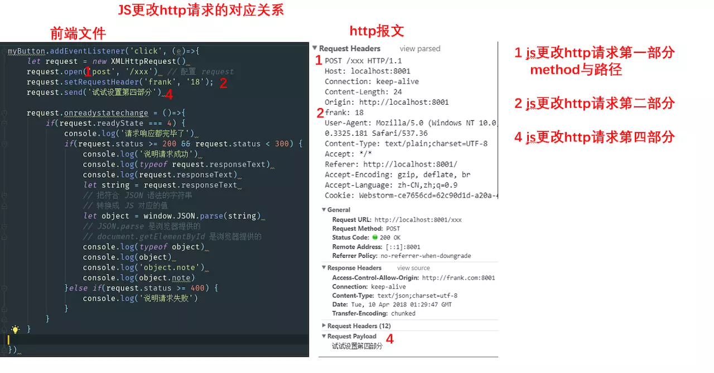

http报文格式请求格式GET /xxx HTTP/1.1 第一部分HOST: jack.com:8002 第二部分 key:value形式Content-Type: application/x-www-url-encoded 空行是第三部分，下面就是第四部分请求体响应格式 HTTP/1.1 200 OK 第一部分Content-Type: text/html 第二部分 key:value形式 第三部分 空行<!DOCTYPE html> 第四部分 响应体<html>.…</html>第一部分 request.open('get', '/xxx')
第二部分 request.setHeader('content-type', 'x-www-form-urlencoded')
第四部分 request.send('a=1&b=2')

第一部分 request.status / request.statusText
第二部分 request.getResponseHeader() / request.getAllResponseHeaders()
第四部分 request.responseText
所以通过ajax，我们可以获取请求中的4各部分的所有内容（不安全的会不让设置），也可以获取响应中的4个部分。
2.1 从内存图的角度看我们在做什么
jQuery作为对象，我们假设它在桟内存中地址是Addr89，对应的堆内存中的一个对象89。 现在我们需要给89添加一个新的key，也就是ajax，它的值对应着101这个函数体，我们要写的就是这个函数体。
代码形式如下：
window.jQuery.ajax = function(options){ // 代码 （这就是我们要写的部分）}满足条件 jQuery.ajax(url,method,body,success, fail)
代码如下：
window.jQuery.ajax = function(url, method, body, success, fail) { let request = new XMLHttpRequest() request.open(method, url) request.onreadystatechange = ()=>{ if(request.readyState === 4) { if(request.status >= 200 && request.status < 300) { success.call(undefined, request.responseText) } else if (request.status >= 400) { fail.call(undefined, request) } } } request.send(body)}promise的好处
1.完全不需要记是传 success还是成功或是error还是fail，只需要then(这里放成功，这里放失败)，标准化操作
window.jQuery.ajax = function({url, method}) { // 传参是 es6解构赋值 return new Promise ( function(resolve, reject){ // 这一行很关键 let request = new XMLHttpRequest() request.open(method, url) request.onreadystatechange = ()=>{ if(request.readyState === 4) { if(request.status >= 200 && request.status < 300) { resolve.call(undefined, request.responseText) } else if (request.status >= 400) { reject.call(undefined, request) } } } request.send() })}https://github.com/FrankFang/nodejs-test-cors/blob/6b7c53c0eccb712213b7ed9640e8ca7d21620166/main.js
https://github.com/FrankFang/nodejs-test-cors/blob/e86d62069b517d35374eecd6b8a3d4b81402d48a/main.js